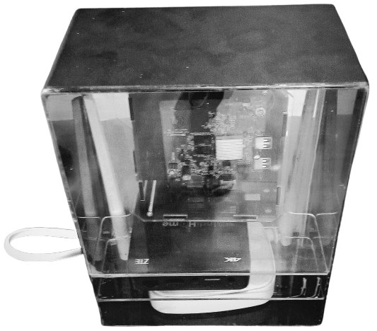
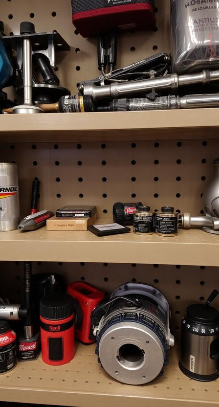
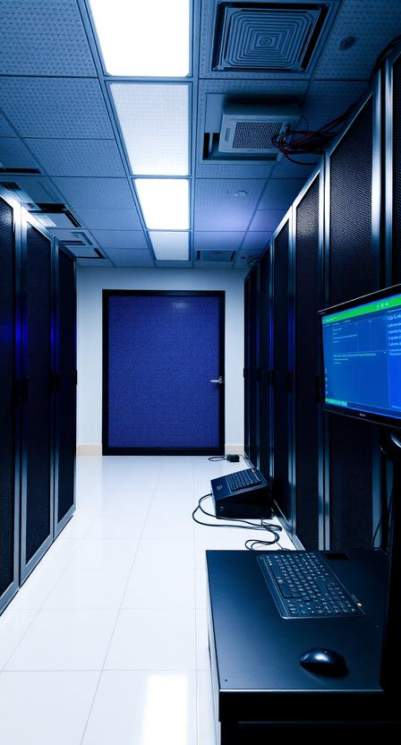
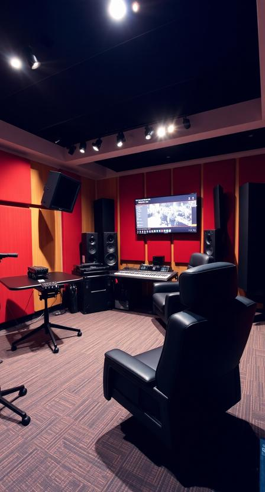

apa itu NEURA BOX
Neuro Box merupakan proyek pemanfaatan Set Top Box (STB) sebagai server mini yang dirancang untuk mendukung kebutuhan digital marketing berbasis AI secara efisien dan terjangkau. Melalui integrasi Network Attached Storage (NAS) sebagai pusat data konten, workflow automation menggunakan n8n, serta AI untuk analisis dan pengolahan data pemasaran digital, Neuro Box memungkinkan otomatisasi proses seperti pengelolaan aset konten (mindmap), analisis performa, penjadwalan, dan respons pemasaran berbasis data. Sistem ini membantu pelaku UMKM, mahasiswa, dan institusi pendidikan untuk menjalankan strategi digital marketing secara lebih terstruktur tanpa ketergantungan penuh pada layanan cloud berbiaya tinggi. Dengan pendekatan komputasi lokal yang hemat energi dan fleksibel, Neuro Box tidak hanya menjadi solusi teknologi, tetapi juga media pembelajaran praktis dalam penerapan AI dan otomasi pada ekosistem digital marketing modern.
The Progress
Ketua Project Neura Box
Abdul Malik @malikftzeyd
Job desk perdivisi
Fokus pengembangan Hardware
1. Haidar (ketua hardware)
2. Faiq
3. Rangga
4. Doni
5. Fadhil
6. Vito
7. Fatir
8. Pita
9. Erika
10. Malik cemani
Fokus Pengembangan dan Konsep Software AI
1. Hafiz (ketua software)
2. Abdul Malik (penanggung jawab)
3. Ridwan
4. Billy
5. Shifa
6. Raya
7. Deshinta
8. Manggala
Fokus Video Dokumentasi Dan Video presentasi
1. Salwa
2. Rere (Ketua Dokumentasi)
3. Tata
4. Eva
5. aulia
Keuangan
1. Aulia (Ketua Keuangan)
2. Rere


Hardware DivsionTim hardware Neurabox bertanggung jawab dalam merancang dan membangun server NAS (Network Attached Storage) berbasis STB sebagai infrastruktur utama pendukung proyek AI Chatbot Neurabox. Dengan memanfaatkan STB yang dimodifikasi secara hardware dan software, tim kami menghadirkan solusi server yang efisien, hemat biaya, dan mampu beroperasi secara stabil untuk kebutuhan komputasi dan penyimpanan data AI. Server NAS ini digunakan untuk menyimpan dataset, model AI, serta data pendukung lainnya. Melalui optimalisasi manajemen penyimpanan, kinerja jaringan, serta efisiensi daya, tim hardware memastikan sistem berjalan secara berkelanjutan, mandiri, dan siap dikembangkan seiring pertumbuhan Neurabox.

Software DivisionTim software Neurabox berperan dalam mengembangkan dan mengintegrasikan seluruh sistem perangkat lunak yang mendukung web platform, AI Chatbot, serta layanan digital lainnya. Tim ini bertanggung jawab atas perancangan arsitektur aplikasi, pengembangan antarmuka web, backend system, serta pengolahan dan penerapan model AI agar dapat berjalan optimal di atas infrastruktur yang tersedia. Selain itu, tim software memastikan integrasi yang mulus antara server, database, dan layanan AI, sekaligus menjaga keamanan, performa, dan skalabilitas sistem. Melalui pendekatan pengembangan yang terstruktur dan berkelanjutan, tim software Neurabox berfokus pada penciptaan solusi yang inovatif, adaptif, dan siap digunakan dalam berbagai kebutuhan pengembangan AI di masa depan.

Media DivisionTim media Neurabox bertanggung jawab dalam mengelola seluruh aspek promosi, perekaman alur pengerjaan, serta dokumentasi proyek secara menyeluruh. Tim ini berperan dalam menyusun strategi komunikasi visual dan digital untuk memperkenalkan Neurabox kepada publik, sekaligus mendokumentasikan setiap tahap pengembangan—mulai dari proses perakitan hardware, pengembangan software, hingga pengujian sistem AI. Melalui pembuatan konten visual, video, dan arsip dokumentasi yang terstruktur, tim media memastikan setiap proses dan pencapaian proyek tercatat dengan baik, informatif, dan mudah dipahami, serta mendukung citra Neurabox sebagai proyek teknologi yang transparan, progresif, dan profesional.